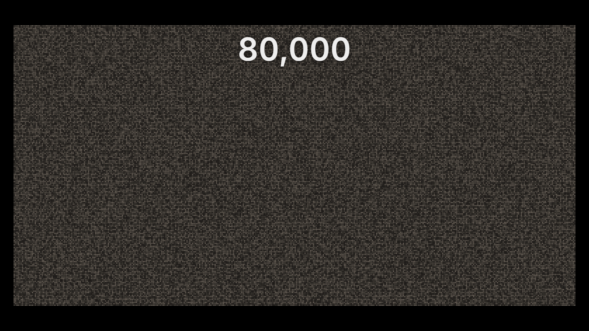
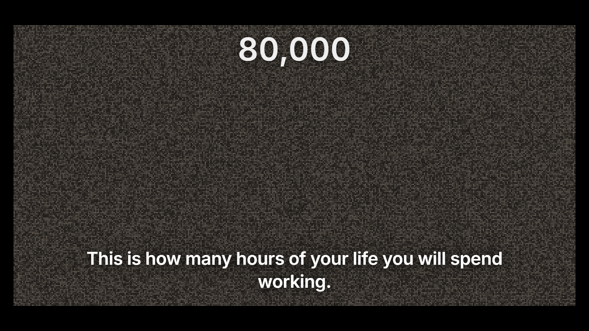
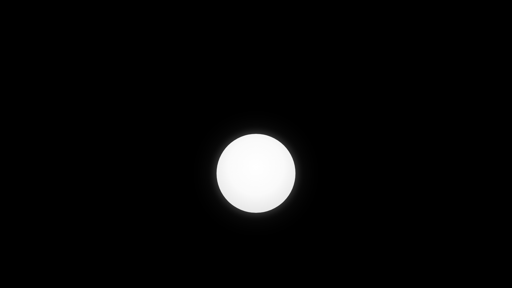
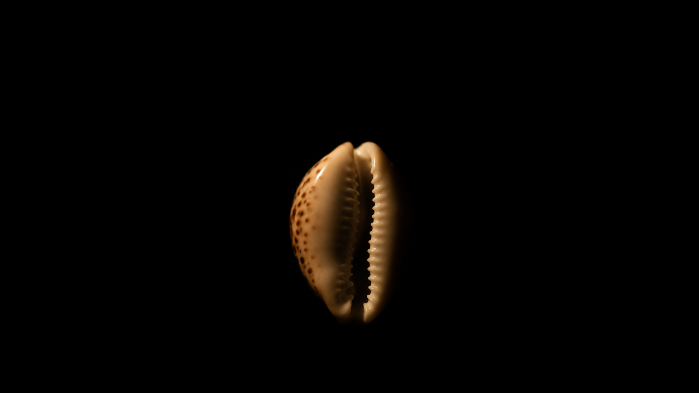


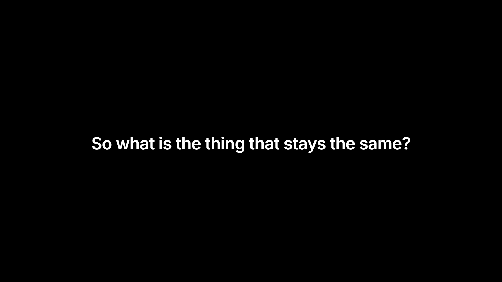

Thirty-three settled states, captured out of the running deck at 1920×1080 — every one of them proven identical to its presenter-approved cell at zero differing pixels (landed-proof.json), and Act I's nineteen proven identical to the closed prototype as well (transplant-proof.json). Click any frame for full size. This strip is a record, not the review: the review is the deck itself, run from the top.
Eleven beats and the authored entry black. The field fills to eighty thousand, condenses into the ruled ball, and shape-shifts through five forms — one advance each — before the frame clears to the question and the title.





One line on black, and it holds: the promise and the handoff to the exchange are carried entirely in the voice. The two beats are identical by design.


The stage assembles with warmth; the service is delivered; the frame turns to what the surgeon wants; the return fails as an absence — no line is ever drawn — and the binding line lands over the two people it is about.


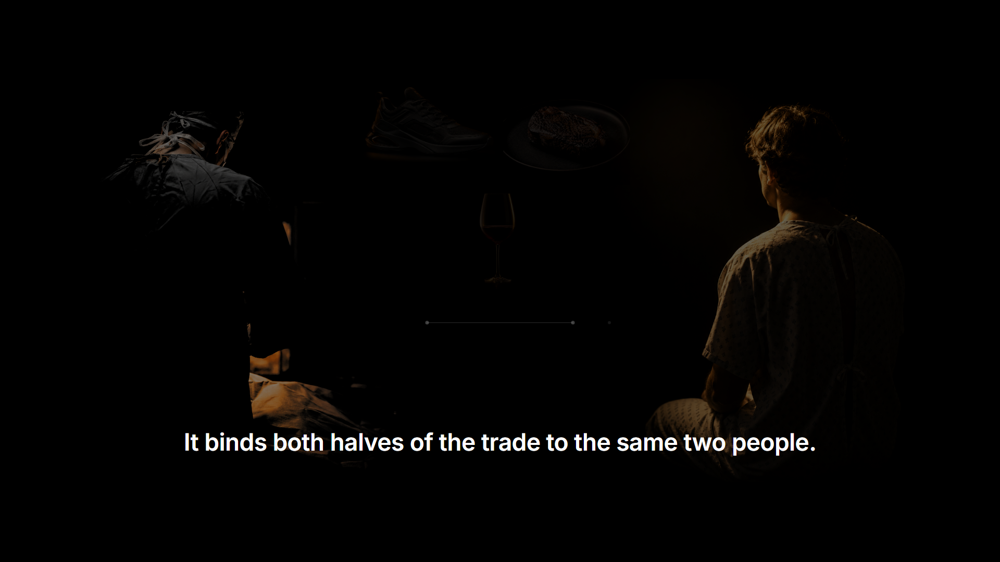
The heart of the film. The claim is born from the void the failed return left — the film’s first orange — detaches from the patient, and the interval opens: someone else, somewhere else, later.


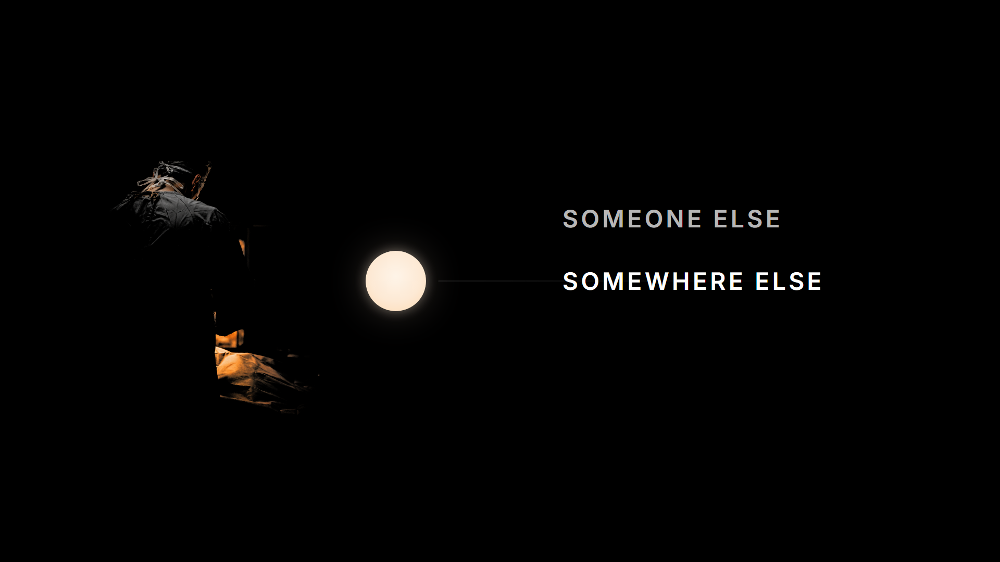


The fork, in system B throughout: two mirrored roads, the unchosen one dormant rather than absent. Spend closes the exchange; save keeps it open, and the road runs on into time it cannot see.

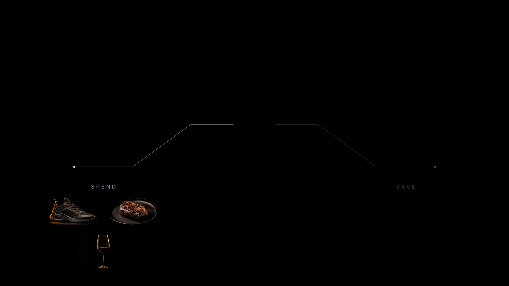

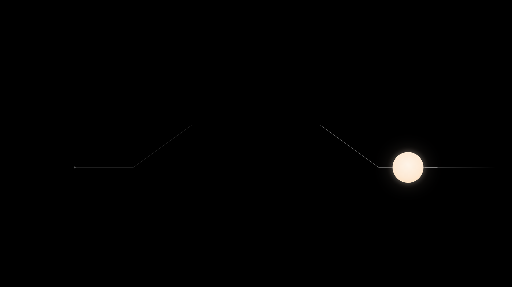

A settled frame cannot show motion, and the motion is half the argument. These eight are caught in the middle of their gesture, out of the running deck.
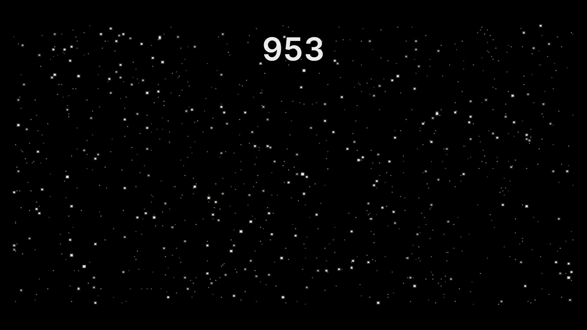
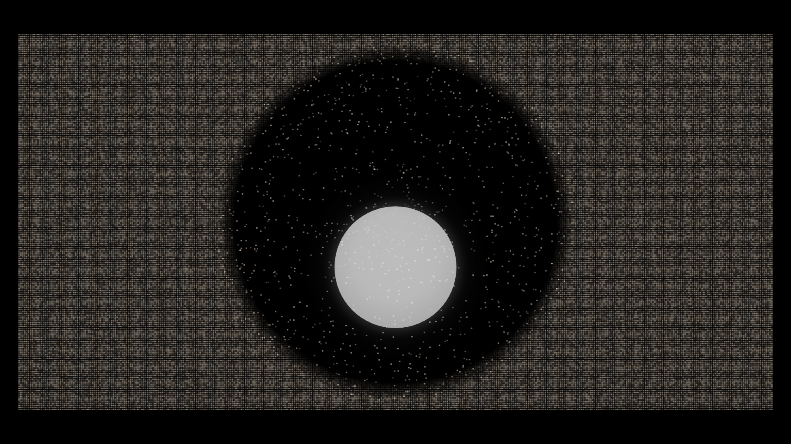
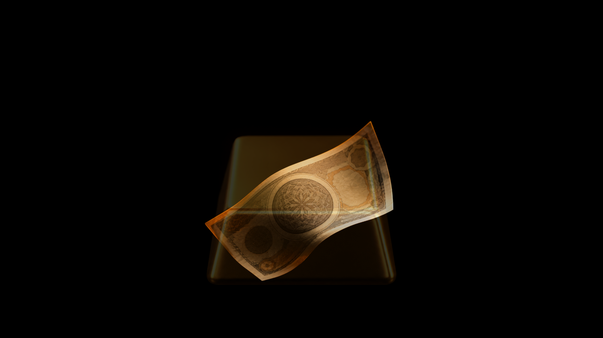
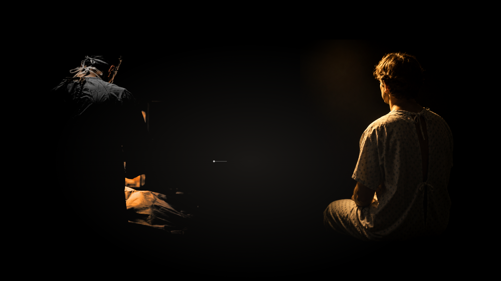
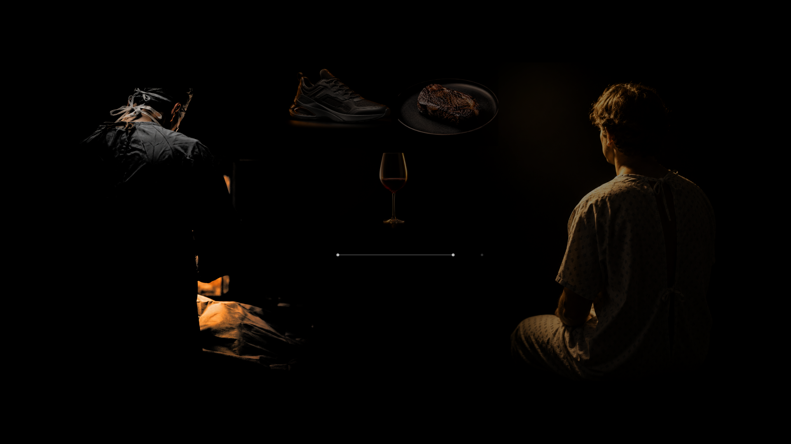
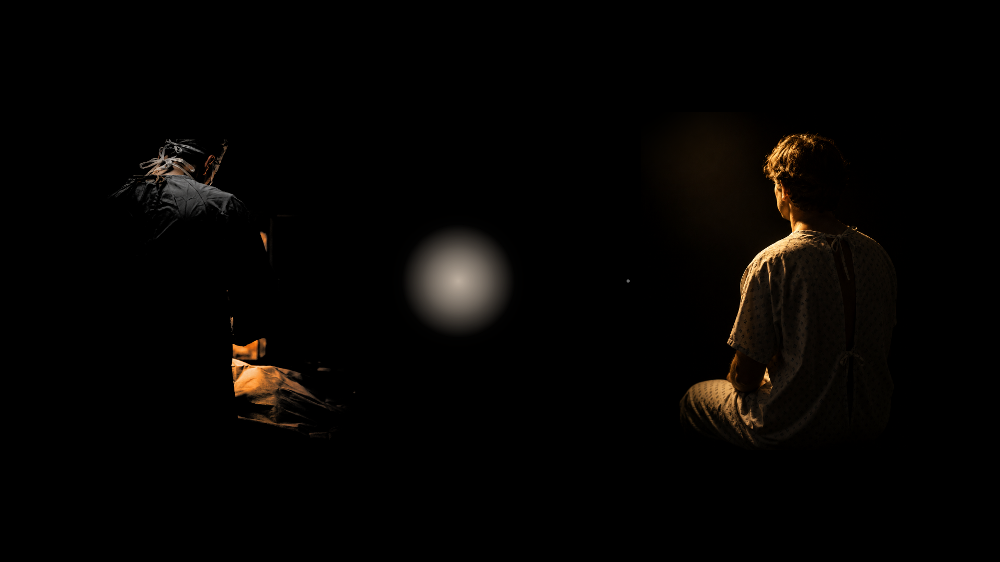
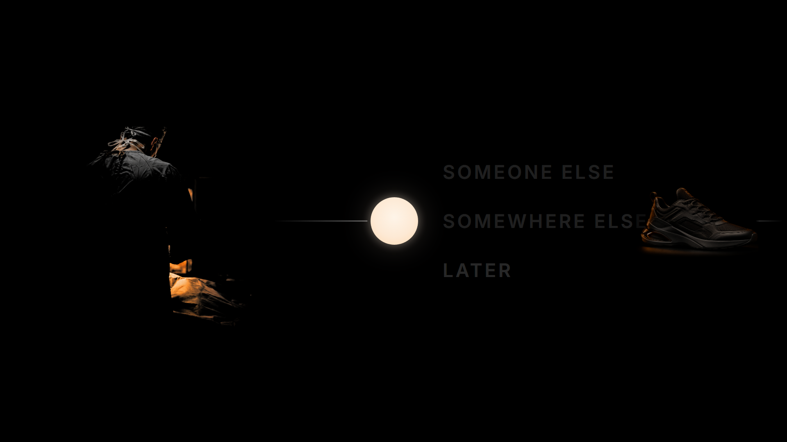
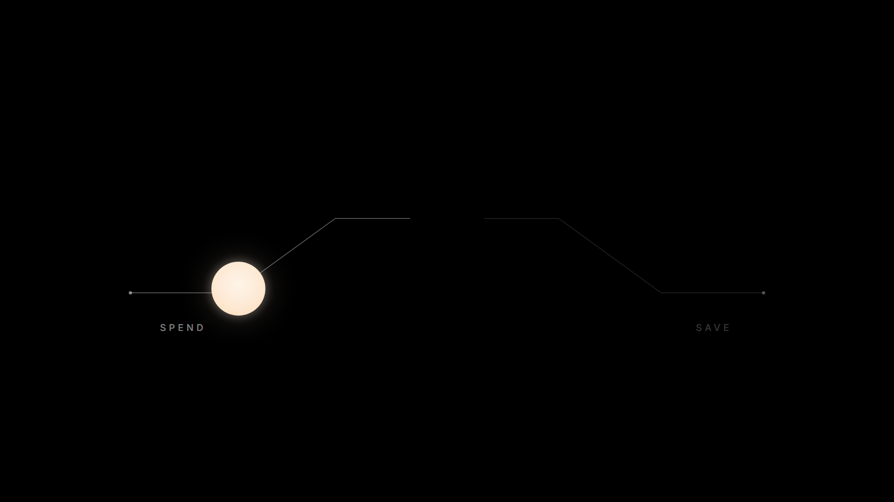